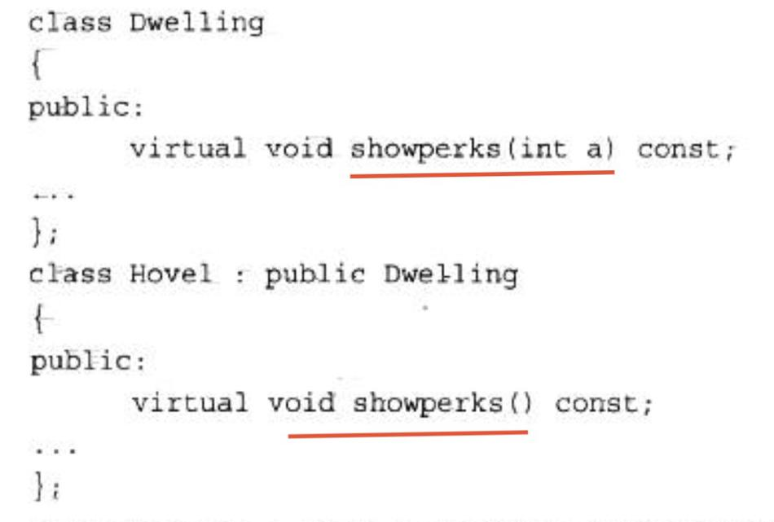
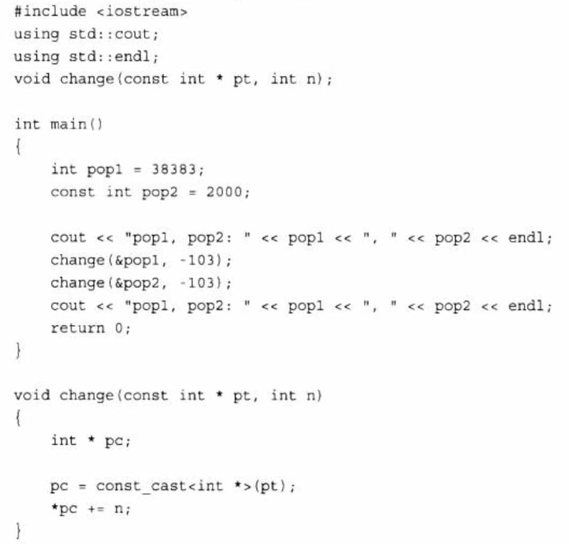

1. typedef
别名，如将unsigned long类型别名为Item：
typedef unsigned long Item;
2. static
static变量是在头文件中声明，在原文件中初始化。
xxx.h
class xxx {
private:
static int val;
};
xxx.cpp
#include "xxx.h"
int xxx::val = 0;
初始化是在方法文件中，而不是在类声明文件中进行的，这是因为类声明位于头文件中，程序可能将头文件包括在其他几个文件中。如果在头文件中进行初始化，将出现多个初始化语句副本，从而引发错误。
但如果静态成员是整型或枚举型const，则可以在类声明中初始化。
3. const
3.1. 常量
创建常量的通用格式如下：
const type_name = value;
3.2. const形参
为了防止参数被修改，可以添加const，cpp的const强度比Java的final更高，不光不能改地址，还不能修改里面的内容。
普通指针不能用于const形参。
3.3. 指针和const
让指针指向一个常量对象，这样可以防止使用该指针来修改所指向的值。将指针本身声明为常量，这样可以防止改变指针指向的位置。
指向常量的指针
int age = 39;
const int * pt = &age;
pt的声明并不意味着pt指向一个常量(age就不是常量)，而是对pt来说，是一个常量，不能通过pt来更改age值。
不能将const变量的地址赋给普通指针
指针本身声明为常量
int sloth = 3;
const int *ps = &sloth;
int * const finger = &sloth;
在最后一个声明中，关键字const的位置与以前不同。这种声明格式使得finger只能指向sloth，但允许使用finger来修改sloth的值。中间的声明不允许使用ps来修改sloth的值，但允许将ps指向另一个位置。简而言之，finger和*ps都是const，而*finger和ps不是。
3.4. 返回对象和const
3.4.1. 返回指向const对象的引用
const Vector & Max (const Vector & v1, const Vector & v2){
if(v1.val() > v2.val())
return vl;
else
return v2;
}
这样做的目的是提高效率。
由于返回的是const对象引用，而返回函数内的临时引用会引发问题，所以只能返回形参引用，这就要求形参也是const。
3.4.2. 返回指向非const对象的引用
两种常见的返回非const对象情形是，重载赋值运算符以及重载与cout一起使用的<<运算符。
前者是为了连续赋值：
s1 = s2 = s3;
后者是为了串接输出：
cout << s1 << endl;
3.5. 参数括号后的const
const Stock & topval (const Stock & s) const;
括号后的const表明，该函数不会修改被隐式(this)地访问的对象。
top = stock1.topval(stock2);
top = stock2.topval(stock1);
第一种格式隐式地访问stock1，而显式地访问stock2；第二种格式显式地访问stock1，而隐式地访问 stock2。
4. virtual
如果方法是通过引用或指针而不是对象调用的，它将确定使用哪一种方法。如果没有使用关键字virtual，程序将根据引用类型或指针类型选择方法；如果使用了virtual，程序将根据引用或指针指向的对象的类型来选择方法。
如果父类的方法没有设置virtual，子类设置了virtual，调用父类引用的此方法，执行的依然是父类方法。如果父类方法设置了virtual，子类没有设置，执行的结果是根据具体的对象类型。
4.1. virtual原理
虚函数的原理见cpp原理总结。
4.2. 注意事项
重新定义将隐藏方法
假设创建了如下所示的代码:

Hovel trump;
trump.showperks();// valid
trump.showperks(5);// invalid
新定义将showperks()定义为一个不接受任何参数的函数。重新定义不会生成函数的两个重载版本，而是隐藏了接受一个int参数的基类版本。总之，重新定义继承的方法并不是重载。如果在派生类中重新定义函数，将不是使用相同的函数特征标覆盖基类声明，而是隐藏同名的基类方法，不管参数特征标如何。
这引出了两条经验规则：
- 如果重新定义继承的方法，应确保写原来的原型完全相同，但如果返回类型是基类引用或指针，则可以修改为指向派生类的引用或指针。这种特性被称为返回类型协变(covariance of return type)，因为允许返回类型随类类型的变化而变化。
- 如果基类声明被重载了，则应在派生类中重新定义所有的基类版本。
4.3. 虚基类
虚基类见类总结的多个实例。
4.4. 纯虚函数
class CShape
{
public:
virtual void Show() = 0;
};
在普通的虚函数后面加上" =0"这样就声明了一个pure virtual function
- 当想在基类中抽象出一个方法，且该基类只做能被继承，而不能被实例化；
- 这个方法必须在派生类(derived class)中被实现；
5. 类型转换运算符
5.1. dynamic_cast
见RTTI总结的dynamic_cast
5.2. const_cast
const_cast运算符用于执行只有一种用途的类型转换，即改变值为const或volatile，其语法与dynamic_cast运算符相同：
const_cast<type-name>(expression)
如果类型的其他方面也被修改，则上述类型转换将出错。也就是说，除了const或volatile特征(有或无)可以不同外，type_name和expression的类型必须相同。
再次假设High和Low是两个类：
High bar;
const High *pbar = &bar;
High * pb = const_cast<High *> (pbar) ;// valid
const Low * pl = const_cast<const Low *> (pbar);// invalid
第一个类型转换使得pb成为一个可用于修改bar对象值的指针，它删除const标签。第二个类型转换是非法的，因为它同时尝试将类型从const High \改为const Low*。
High bar;
const High * pbar = &bar;
High * pb = (High *) (pbar);//valid
Low * pl = (Low *)(pbar);// also valid
由于编程时可能无意间同时改变类型和常量特征，因此使用const_cast运算符更安全。
const_cast不是万能的。它可以修改指向一个值的指针，但修改const值的结果是不确定的。

由于pop2被声明为const，因此编译器可能禁止修改它，如下面的输出所示：
pop1, pop2: 38383，2000
pop1, pop2: 38280，2000
调用change()时，修改了pop1，但没有修改pop2。在change()中，指针被声明为const int *，因此不能用来修改指向的int。指针pc删除了const特征，因此可用来修改指向的值，但仅当指向的值不是const时才可行。因此，pc可用于修改pop1，但不能用于修改pop2。
5.3. static_cast
5.4. reinterpret_cast
6. decltype
如果希望从表达式的类型推断出要定义的变量的类型，但是不想用该表达式的值初始化变量。为了满足这一要求，C++11新标准引入了第二种类型说明符：decltype。
它的作用是选择并返回操作数的数据类型。在此过程中，编译器分析表达式并得到它的类型，却不实际计算表达式的值：
decltype(f()) sum = X; // sum的类型就是函数f的返回类型
使用例子：
for (decltype (ivec.size() ) ix = O; ix != 10; ++ix) {
ivec.push_ back(ix);
}